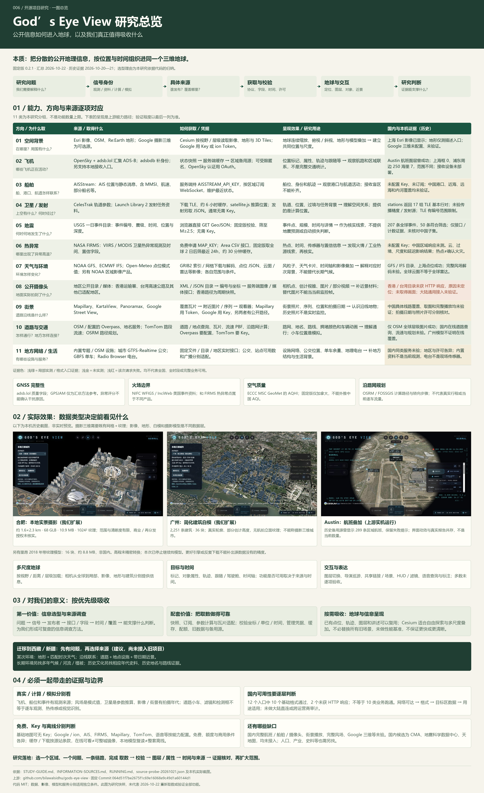
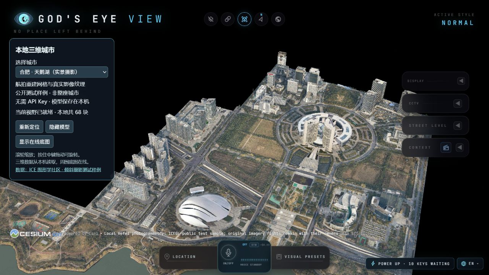
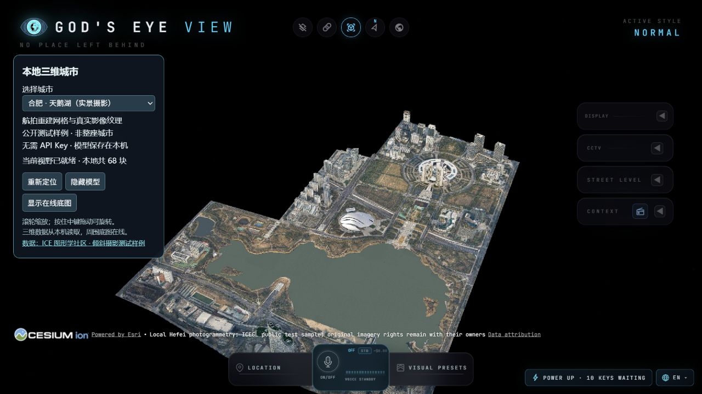
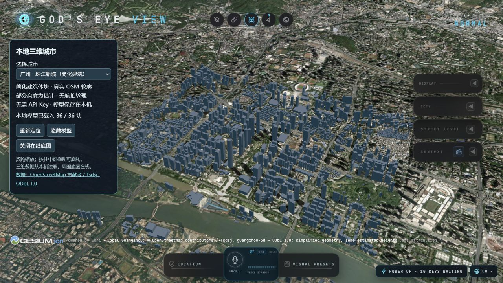
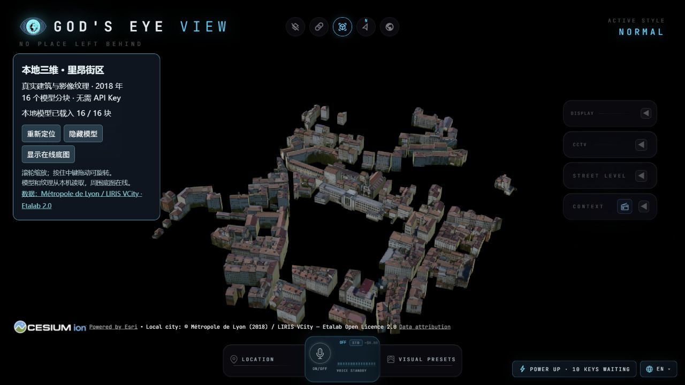
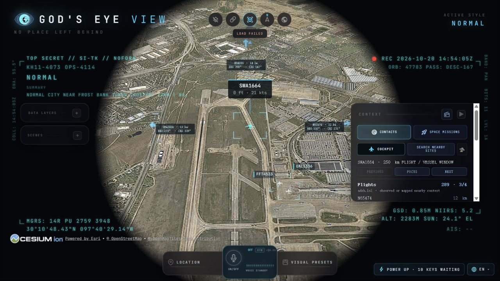
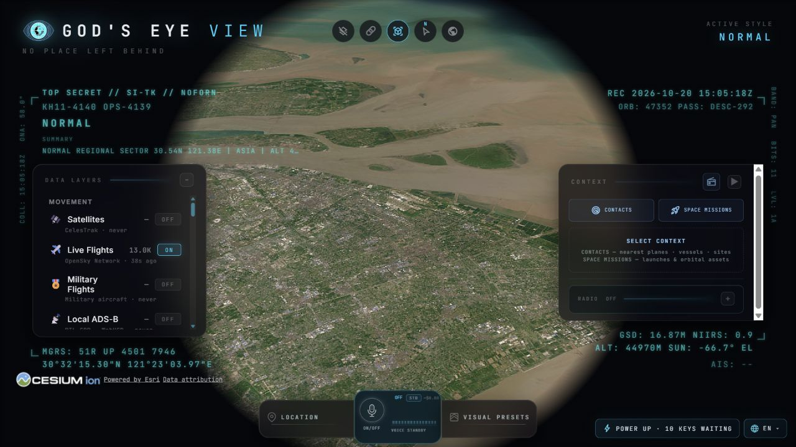

一图总览：能力 → 来源 → 获取 → 效果 → 研究价值2026-10-22 汇总 · 点击展开
包含 11 类来源、补充专题、3 张历史实机截图和验证边界。打开高清 PNG ↗ · 打开矢量 SVG ↗。图中实测证据仍为 2026-10-20—21，未重新取数。

我们怎样理解这个项目？
它是把多种公开地理信息汇集到同一个三维地球的应用，也是一个值得拆解的信息来源样本。 它不生产全球实时影像，不拥有所有飞机、船舶和摄像头的数据；它适配不同发布者的接口，再把位置、时间、对象与现场材料组织到一起。
对我们最有价值的是它怎样选择信息：先建立空间背景，再观察移动对象、环境变化、事件和近景材料。由此反查信号怎样产生、谁在发布、有没有可持续取得的入口，以及目标地区是否真的有数据。这个选取逻辑是本研究依据代码和来源结构的归纳，未获得作者的选型访谈。
| 要点 | 当前理解 |
|---|---|
| 库的能力 | 汇集多种公开地理信息，提供地球定位、图层叠加、对象属性、追踪、时间与近景材料等能力 |
| 呈现效果 | 可缩放与倾斜浏览的三维地球，加上动态标记、轨迹和事件；真实建筑外观取决于是否接入相应摄影模型 |
| 实现原理 | API 快照、WebSocket 订阅、轨道参数推算与网格／瓦片读取，经代理、缓存、字段和时间处理，再由 Cesium 按视野与层级渲染 |
| 支持方向 | 空间背景、空中与海上活动、轨道与发射、天气、地震／热异常、摄像头／街景、道路与地方服务；地域覆盖各不相同 |
| 最值得吸收什么 | 从研究问题到信息类别、产生机制、来源、取数方法和证据边界的一整套调查方式 |
| 地球为什么有价值 | 给跨地区、多尺度、多来源信息提供共同位置，适合自由浏览、追踪与空间关联 |
| 效果为什么有差异 | 数据类型、覆盖、几何和纹理精度、相机距离、网络加载状态与渲染风格共同决定 |
| 我们已经做到什么 | 原应用本地运行、地图与部分航班验证、三类本地城市模型接入，以及来源研究和有限接口探测 |
| 还不能承诺什么 | 国内完整实时覆盖、任意摄像头访问、视频同等画质、所有功能免费或整个应用离线 |
库能做什么，我们验证了什么。
区分上游能力、本机已验证与尚未验证，
避免把功能清单当成完成清单。
下表区分“上游具备的路径”和“本机验证结果”。文档列出一个功能，不等于我们已经跑通它。 上游演示可看作者完整讲解视频；视频是作者的演示，本站截图是我们自己的运行证据。
| 能力 | 呈现方式与适用场景 | 本机进展 |
|---|---|---|
| 地球、影像、地形与城市 | 全球定位、连续缩放、倾斜观察；适合地区比较与地理背景 | 地球和上海影像已显示；Google 摄影三维未配置；本地模型另已验证 |
| 飞机、目标跟踪与轨迹 | 地图标记、对象详情、相机跟随；适合观察航路和交通联系 | Austin 曾显示区域航班；上海抽样为空；驾驶舱、全部轨迹能力未逐项验收 |
| 船舶与港口活动 | AIS 状态、轨迹和船舶身份 | 未配置 AISStream Key，未订阅 |
| 卫星、轨道与发射 | 参数推算位置、轨道及任务背景；适合过境解释 | 仅测到 stations 参数基本格式；未验证完整轨道或语音过境查询 |
| 地震与热异常 | 事件点、震级、时间或卫星热点；适合发现核实线索 | USGS 目录已探测；FIRMS 未配 Key |
| 风场、点位天气和天气影像 | 风粒子、预报时间、点位卡片、云图／雷达等 | 部分目录与上海点位接口成功；完整风场解码和影像播放未验收 |
| 公开摄像头与街景 | 坐标点、估计视锥、快照／部分视频和街景观看器 | 香港、台湾目录本次失败；国内画面和街景覆盖未验证 |
| 道路、路径和交通 | 路网、导航路径、流速着色与道路车辆动画 | 有源码路径；道路车辆为模拟，TomTom 与导航未实机验收 |
| 设施、公交、单车与电台 | 专题图层、车辆位置、站点可用数、广播入口 | 依地区或固定数据提供，本次未验收国内服务 |
| 其他专题 | GNSS 异常汇总、火场边界、加拿大空气质量、OSM 车牌识别相机位置 | 固定版文档列出；均未实测，地域不同，相机位置不包含车牌记录或视频 |
| 视觉风格与导演工具 | 战术 HUD、夜视／热成像风格、相机巡游、共享场景和链接 | 基础 UI 与视角可操作；其余未逐项验收；视觉滤镜不增加观测信息 |
| 语音与分析交互 | 自然语言切图层、定位、查询已加载资料和标注 | 上游提供配置路径；本机未配置、未验证 |
依据：固定版能力与配置说明。适用场景包括公开数据探索、交通和环境背景观察、地理教学、事件资料组织及演示制作。是否适合某项研究，取决于目标区域和年代是否有足够资料，而不取决于界面看起来多像指挥中心。
直接看我们的运行画面。
以下 6 张均为 2026-10-20—21 本机实拍页面截图。城市模型由我们扩展接入；航班与上海底图来自上游应用运行。切换查看差异，点击图片可打开原图；画面不是此刻的实时状态。
合肥天鹅湖：能看见立面的真实摄影纹理
2026-10-21 实机。建筑、道路和湖岸来自本地摄影网格，不是二维底图生成。68 个 GLB，约 10.9 MB，覆盖约 1.6 × 2.3 公里；纹理 1024×1024，近看清晰度有限。采集年代及商业、再分发授权未核实。

局部样例的全景：有边界，也有精度上限
2026-10-21 实机。默认关闭在线底图，样例范围以外为空；这不是整座合肥。镜头拉近不能补出源数据中没有的细节。用户已要求停止继续模型研究，保留此结果作效果和接入证据。

广州：轮廓与体量存在，真实摄影立面缺失
2026-10-21 实机。OSM 派生的 2,251 条建筑记录、36 个分块，部分高度是估计。没有航拍立面纹理，因此不能当实景摄影城市；清晰底图也不会自动补出真实建筑外观。数据采用 ODbL 1.0。

里昂：关闭底图后，建筑仍独立存在
2026-10-21 实机。2018 年公开纹理建筑，16 个分块、约 8.8 MB，Etalab 2.0 许可。证明模型几何和纹理已在本机；不是国内模型，高程未做精密基准转换，不用于测量。

公开位置消息与地球叠加：航班画面
2026-10-20 历史画面。OpenSky 当时超时，adsb.lol 区域备用源曾返回 289 条并显示飞机；画面保留失败提示。它说明本次降级路径曾工作，不代表当前数量或全球完整覆盖。

国内底图能显示，不等于国内动态对象齐全
2026-10-20 历史画面。浦东机场 Esri 影像显示成功；随后 OpenSky 有 13,125 条全球记录，但指定上海框为 0。面板全球数量不是上海数量，影像中拍到的飞机也不是实时航班标记。

真实、推算、模拟，分别看。
| 画面或对象 | 信息的实际身份 | 正确理解 |
|---|---|---|
| 地图影像中的建筑、车辆、飞机 | 某次拍摄留下的像素 | 可用于辨认背景；不是此刻的动态目标 |
| 飞机／船舶标记 | 接收网络汇集的位置报告 | 有时间和盲区；平滑动画不能补出漏报对象 |
| 卫星位置 | 用轨道参数计算的结果 | 是推算的位置，不是卫星正在直播地面 |
| 地震点／FIRMS 热点 | 已发布事件目录／遥感热异常 | 需核对时间与阈值；热点并非已确认火灾 |
| GFS／IFS 风场 | 数值预报模式的计算值 | 需区分起报与有效时间，不等于现场传感器实测 |
| 道路上移动的小车 | 按路网生成的交通模拟 | 即使采用真实路段流速，也不是每辆车的实际位置 |
| 相机图像、街景和视锥 | 周期快照、历史照片或媒体；部分朝向为估计 | 核查图源和日期；替代图片不能称当前监控帧 |
| 热成像、夜视、检测框和战术字样 | 着色器与界面表达 | 不代表取得热传感器数据、识别结果或保密情报 |
| 摄影三维建筑 | 既有三维网格与摄影纹理 | 有真实外观，但可能是多年前采集，精度与范围有限 |
因此不能将整个项目简单归为“全模拟”或“全部实时”。应逐图层标记：观测、编目、模式计算、参数推算、估计、模拟，再看观测时间和当前数据状态。来源、时间和降级提示本身也是值得借鉴的呈现设计。
为什么效果不同，什么场景更适用？
影像、地形、建筑和摄影纹理分别提供信息。
地球引擎不能补出源数据没有的细节。
我们现在浏览的地球本身就是三维的；二维影像只是一类贴在地球表面的数据。 地形高低、建筑几何与摄影纹理是不同层，不能把“底图是照片”理解成“整个画面没有三维”。也不需要由我们把每张底图照片临时转成城市模型。
| 层次 | 提供什么 | 缺少时会怎样 |
|---|---|---|
| 三维地球／椭球 | 全球坐标、曲面、相机与空间定位 | 无法连续组织全球视角；光滑椭球本身没有真实山谷 |
| 影像瓦片 | 地表颜色、道路和屋顶等俯视外观 | 背景细节少；即使清晰也不自动有建筑立面 |
| 地形高程 | 山体、峡谷、地表起伏 | 影像可能铺在平滑表面；不自动生成精细建筑 |
| 建筑几何／白模 | 建筑轮廓和高度 | 难以斜视辨认建筑体量；简化高度可能是估计 |
| 摄影三维网格与纹理 | 实拍外观覆盖屋顶、立面及部分地物 | 有体量但像白模，或近看纹理模糊 |
| 渲染与相机 | 光照、色调、透视、飞行和界面风格 | 观感改变，原始数据的精度仍不变 |
与西藏／新疆研究方式的适用性比较
下面延续此前讨论中“全局贴图地球＋独立区域场景”和本库 Cesium 按需加载的比较。本总仓库未定位到旧项目源码，本轮没有重新审计旧实现，也没有进行首屏、帧率或流量基准测试。
| 维度 | 预先准备的贴图地球／区域场景 | 本库 Cesium 按需加载 |
|---|---|---|
| 适合的问题 | 固定路线、课程或叙事，强调指定区域与可控镜头 | 自由浏览全球、连续缩放、多来源对象和图层叠加 |
| 数据准备 | 先准备有限分辨率资源或特定区域模型 | 按当前视野、距离和层级取得所需分块 |
| 清晰度与细节 | 由准备的贴图、地形和模型决定 | 由服务实际提供的影像／地形／模型层级决定 |
| 网络与稳定性 | 本地资源可控，更新需自行准备 | 在线依赖、凭据、额度、覆盖和失败降级需要管理 |
| 哪种更好 | 受控叙事或指定区域可能更适合 | 大范围探索与持续加信息更适合；不能由此断言总是更快或更清晰 |
作者视频的实景城市效果，需要该地点本来就有足够精细的摄影三维数据，并且加载成功。Google / ion 是上游的可选接入路径；本机合肥样例则是另一份局部模型。相同引擎与 Key 不能保证中国每个城市都有同等质量。
围绕问题，选择信息。
以下是依据源码与数据结构归纳的选择思路，
不代表作者公开解释过的完整选型过程。
获取什么，从哪获取，怎样获取。
展开每项可查看采集理由、具体发布者／入口、字段与协议、凭据、国内证据、限制和源码。四种主要取法是区域／时间快照、持续消息订阅、下载参数后计算，以及瓦片／网格／目录读取。获取链路与调查模板 ↗
显示 11 / 11 类来源
01空间背景：地图影像、地形与地点建立位置、尺度、地貌与周边参照，让事件和对象有落点。
- 为什么获取：建立位置、尺度、地貌与周边参照，让事件和对象有落点。
- 来源与内容：Esri World Imagery、OpenStreetMap、Re:Earth / Mapterhorn；Google 实景三维为可选来源。影像、道路/地点、地形、建筑模型是不同数据。
- 怎么取：Cesium 按视野与层级请求瓦片。Esri 入口是
https://services.arcgisonline.com/ArcGIS/rest/services/World_Imagery/MapServer；Re:Earth 是https://terrain.reearth.land/cesium-mesh/ellipsoid。三维模型沿 tileset 索引继续取分块；地点查询和地图图片分开。 - 国内与实测：此前上海浦东影像在浏览器显示成功；本次 Esri 元数据、OSM
0/0/0.png和 Re:Earthlayer.json均成功。没有验证全国细层级及地形分块闭包。Google 路径未配置凭据，未验证中国城市覆盖。 - 限制：底图有拍摄年代；图上看到飞机不能当实时飞机状态。瓦片可读不等于允许批量镜像或再分发。Re:Earth 初始化失败时，代码可降级到平滑椭球，不能将降级画面当真实地形。
- 源码：默认来源、影像、地形与降级。模型实践保留于 LOCAL-DATA.md，本次不再继续找模型。
02飞机：OpenSky 与 adsb.lol飞机广播带身份、时间和位置的信号，适合认识航路活动与区域联系，不需从影像猜测飞机运动。
- 为什么获取：飞机广播带身份、时间和位置的信号，适合认识航路活动与区域联系，不需从影像猜测飞机运动。
- 字段：OpenSky 状态向量含 ICAO 地址、呼号、经纬度、气压/几何高度、速度、航迹角、位置时间等，部分为空。adsb.lol 提供接收网络汇集的快照和部分轨迹。型号、航线等补充查询另走 adsbdb，并非广播天然包含所有这些字段。
- 怎么取：本地
/api/flights的主源请求 OpenSkyGET /api/states/all?extended=1，正常路径取得全球快照，服务端缓存并按余量调整节奏。主源没有可用快照时结合旧缓存和相机中心附近的 adsb.lol 区域源处理。点接口为https://api.adsb.lol/v2/lat/{lat}/lon/{lon}/dist/{海里}；不是将不同源数量简单相加。 - 凭据与限额：官方允许受限匿名最新状态查询；认证使用 OAuth2 client credentials。固定源码仍保留 Basic 选项，但官方已不接受 Basic 认证。 不能按页面帧率请求或假定始终匿名不限量。
- 国内与实测：此前 OpenSky 全球响应有 13,125 条，其中上海框为 0；本次匿名直查同一框（东经 120–123°、北纬 30–32.5°）仍为 0。adsb.lol 浦东周边 250 海里圆形范围返回 7 条。两范围不同，后者包含周边海域及地区，不能把 7 条说成上海或大陆航班数，也不能据此比较两源覆盖率。
- 限制：受接收站、广播、空字段、限流和网络影响。空记录不等于没有飞机；连续快照不等于完整历史。库有本地 ADS-B 接收入口，本次未部署设备。OpenSky 等服务的使用与数据条件仍需独立核实，不能套用代码 MIT 许可。
- 依据：OpenSky 官方 REST 文档、adsb.lol 官方 API 仓库、固定版主源及备用实现。历史全球响应见 flights-check.json。
03船舶：AISStream观察船舶、港口与航道之间的活动联系；位置报告追踪对象，静态消息补充船舶身份。
- 为什么获取：观察船舶、港口与航道之间的活动联系；位置报告追踪对象，静态消息补充船舶身份。
- 字段：AIS 消息中的 MMSI、位置、航速、航迹向、部分船名等，随消息类型和接收状态分别出现。
- 怎么取：服务器连接
wss://stream.aisstream.io/v0/stream，发送含APIKey、BoundingBoxes及可选过滤的订阅；持续解码消息、维护最近状态。浏览器读取本地/api/vessels。Key 留在服务端；源站明确不允许浏览器直接连接。 - 国内与实测：未配置
AISSTREAM_API_KEY，没有实际订阅。中国港口、近海、远海和内河覆盖均未验证；接受全球框只是订阅条件，不代表消息完整。 - 限制：接收网络与目标广播决定可见性；流可能中断、丢消息，服务方不保证持久重放。广播公开不能自动推导为服务数据可任意商用或转售，使用前复核当前条件。
- 依据：AISStream 官方文档、订阅与本地接口实现。
04卫星与发射：CelesTrak、Launch Library认识上空轨道对象、过境和任务背景；轨道参数与发射任务记录分别提供不同信息。
- 为什么获取：认识上空轨道对象、过境和任务背景；轨道参数与发射任务记录分别提供不同信息。
- 怎么取：CelesTrak
gp.php?GROUP={group}&FORMAT=tle经本地/api/celestrak代理，内存/磁盘缓存约 6 小时。客户端 satellite.js 根据参数推算位置。发射信息另从 The Space Devs Launch Library 2 的近期任务 JSON 获取。 - 国内与实测：无 Key 的
stations请求返回 17 组 TLE 行对，仅检查基本行结构，不代表已完整解析传播或取得全量卫星。公开参数可以用于推算经过中国上空的位置，不依赖中国接收站直接看到卫星；参数新鲜度、漏编和推算精度仍需检查。发射源本次未探测。 - 格式限制：固定源码仍请求 TLE；CelesTrak 官方已说明五位编号格式不能表示 100000 及以上的新编目对象。扩大目录支持需另评估 OMM/JSON 及解析链路，不能认为 TLE 已覆盖所有新卫星。本次只记录限制，没有修改实现。
- 信息身份：基于历元参数计算的位置，不是实时遥感图像、星载视频或连续观测定位。
- 依据：CelesTrak 官方格式说明、固定上游请求、缓存代理、TLE 解析。
05地震：USGS取得已发生事件的时间、位置和规模，作为区域事件观察和核实的入口。
- 为什么获取：取得已发生事件的时间、位置和规模，作为区域事件观察和核实的入口。
- 怎么取：浏览器直接请求
https://earthquake.usgs.gov/earthquakes/feed/v1.0/summary/all_day.geojson。读取事件编号、震级、时间、地点文字和[经度, 纬度, 深度]；固定版校验快照并过滤至 M≥2.5，不是源站全部记录均显示。 - 国内与实测：本次返回 207 条全球事件，其中 50 条符合 M≥2.5。未核对中国子集，也未与国内目录比对，不能当国内全部微震记录。
- 限制：目录可修订，需保留震级类型与更新时间。事件点不能自动给出影响范围、损失或预警；接口不提供地震预测。
- 依据：USGS 官方字段说明、获取实现、筛选与规范化。
06热异常：NASA FIRMS找出卫星观测到的高温异常地点、时间，作为火情、工业热源或变化线索进一步核实。
- 为什么获取：找出卫星观测到的高温异常地点、时间，作为火情、工业热源或变化线索进一步核实。
- 怎么取：申请免费 MAP_KEY；服务器请求
https://firms.modaps.eosdis.nasa.gov/api/area/csv/{MAP_KEY}/{SOURCE}/{AREA}/{DAY_RANGE}，解析坐标、日期/时刻、传感器和置信字段。固定版合并三路 VIIRS NRT 与 MODIS_NRT，拉世界范围 2 日数据再筛最近 24 小时，缓存约 30 分钟；多星记录并未因此自动跨源去重。 - 国内与实测：全球产品范围包含中国，这是产品范围判断；未配置
FIRMS_MAP_KEY，没有实测中国区域响应。过境、云遮挡、产品尺度与处理时延影响可见性。美国/加拿大的快速产品不能外推为中国同等时效。 - 限制：热异常不等于已确认森林火灾、火场边界、受灾面积或起火原因。返回错误页时不能当 CSV。Key 嵌在上游路径中，日志和公开记录应避免保存完整带 Key URL。
- 依据：FIRMS 官方 Area API、固定版获取与缓存。
07天气：模式网格、点位天气、观测影像分开取得提供风、温度、气压等背景，比较同一时次或预报时段的地区条件。
- 为什么获取：提供风、温度、气压等背景，比较同一时次或预报时段的地区条件。
- 来源与方法：NOAA GFS 从公开 S3 取得
.idx和 GRIB2 字节范围；ECMWF IFS 从开放目录及索引取得 GRIB2 字段，服务器解码网格。Open-Meteo 按经纬度和变量通过/v1/forecast返回点位 JSON。固定版风场读取 0.25° 产品，不是取得模式的全部字段。 - 国内与实测：本次 GFS 桶列举和 ECMWF 目录成功，未下载解码完整风场。上海坐标的 Open-Meteo 返回当前时次温度、风速字段，未做实测站点对照。全球模式范围包含中国，但山谷、城市及短时局地精度需另评估。
- 观测图层边界：nowCOAST 雷达主要针对美国本土；闪电密度、气旋各有地域范围。全球红外云图不等于全球雷达，中国台风覆盖也不能由北美气旋图层推出。本次未验证这些图像图层。
- 时间与使用条件：保留起报、预报有效与查询时间；模式值不等于现场气象站实测，单次风场不代表长期气候。ECMWF 有署名与服务条件；Open-Meteo 免费托管 API 限于其非商业条件并有额度，数据许可和托管服务条件分别判断。
- 依据：ECMWF 开放数据、Open-Meteo 字段及服务条件；代码 GFS、IFS、点位天气、观测影像。
08摄像头：地区公开目录和图片端点为地点或事件补充近景观察材料；先取得公开目录和坐标，再按需请求图片/媒体。
- 为什么获取：为地点或事件补充近景观察材料；先取得公开目录和坐标，再按需请求图片/媒体。
- 怎么取：服务器加载已配置的地区目录，规范化编号与坐标，浏览器访问本地
/api/cctv/sources、/frame/:id等接口。香港包读取运输署 XML，根据相机编号请求指定域名 JPEG；台湾高速公路包读取 MOTC XML，按注册映射取单帧。其他地区包格式与播放方式各异。 - 明确入口：香港目录
https://static.data.gov.hk/td/traffic-snapshot-images/code/Traffic_Camera_Locations_En.xml，图片域名https://tdcctv.data.one.gov.hk/；台湾目录https://tisvcloud.freeway.gov.tw/history/motc20/CCTV.xml。香港官方开发指南以交通快拍数据集为示例，可核对来源身份。 - 国内与实测：源码有香港/台湾包，不等于本机已成功。本次两目录都未取得 HTTP 响应，Python 报
URLError / Errno 2，原因未定位，不能据此归因为 TLS、封锁或源站故障。未取得相机画面，没有大陆通用摄像头公开接口的成功证据；香港、台湾和大陆分别判断。 - 限制：香港交通快拍是周期图片，此路径不等于连续视频。缺少真实朝向时会使用低置信度估计，界面视锥不能当精确覆盖。CCTV 帧接口有替代图像链路，必须核对来源，不能将街景替代图片当当前监控帧；不扫描目录以外设备。
- 依据：目录常量、香港目录解析、台湾包、帧接口及替代链路。
09街景：Mapillary、KartaView、Panoramax、Google认识道路沿线与地面对象，取得有拍摄身份的照片和序列，为地方观察提供材料。
- 为什么获取：认识道路沿线与地面对象，取得有拍摄身份的照片和序列，为地方观察提供材料。
- 怎么取：查询覆盖瓦片，在位置附近找图片，再请求序列、图片与观看器。Mapillary 需要令牌；KartaView / Panoramax 有公开接口；Google 路径使用相应 Key 和服务。它们与摄像头目录分开。
- 国内与实测：未测试这些平台的中国覆盖、具体道路照片或完整播放。使用前应对目标线路抽样，不能由国外道路照片推出大陆全国可用。
- 限制：保留拍摄日期、作者、序列与许可。街景不是实时监控；不同图源的缓存和署名条件不同。
- 依据：提供方注册、Mapillary 代理、固定版图源清单。
10道路、地点与交通：OSM、地名服务、TomTom知道对象位于哪里、附近有什么及地区怎样连接；道路几何、地名与交通流分别采集。
- 为什么获取：知道对象位于哪里、附近有什么及地区怎样连接；道路几何、地名与交通流分别采集。
- 怎么取：OSM 经矢量瓦片、固定抽取数据或自行配置的 Overpass 查询取得；地名另走地名服务。固定库
/api/overpass只请求运营者配置的端点，没有配置就不能当默认可用服务。TomTom 流量由服务器持TOMTOM_API_KEY请求 PBF 瓦片，再解码路段流量。 - 国内与实测：本次 OSM 全球底图瓦片成功，未测中国道路/地点查询完整性或 TomTom 国内流量。广州本地 OSM 派生数据库不证明在线查询或全国实时路况可用。
- 限制：OSM 取决于贡献和标签覆盖；沿真实道路生成的车辆运动是模拟，不能当逐车观测。公共 Nominatim 要求应用标识、缓存、低频使用，应用总量最多 1 请求/秒；不能按用户拆分突破额度或用于无限批量编码。
- 依据：Overpass 实现、TomTom 代理、OSM Overpass 说明、Nominatim 公共服务政策。
11其他：设施网络、公交、单车、电台扩展地方结构和生活背景，观察设施联系及部分服务状态。
- 为什么获取：扩展地方结构和生活背景，观察设施联系及部分服务状态。
- 怎么取：设施专题来自内置地理数据或 OSM 抽取；公交按各城市实时接口适配；单车按 GBFS 读取站点与可用数；电台目录提供位置和广播链接，不能按一个接口取得所有地区。
- 国内与实测：不少服务仅限特定国外城市或国家，本次未验证国内同类来源。电台流不能当当地传感器或事件证据。
- 限制：内置资料不是当前观测；如部分海底光缆专题有独立非商业许可，不能因随 MIT 代码提供就直接商用。人口、产业、史料、长期气候并未因此自动补齐，需按研究问题另查。
- 依据：来源和许可清单、公交代理、GBFS 代理。
补充专题：不要把地域功能理解成国内已可用
11 类是本研究的分组，其他专题归在这里。以下依据固定版本源码／资料清单整理，本次均未请求接口或验收画面。
| 专题与采集目的 | 来源与获取方法 | 国内意义与限制 |
|---|---|---|
| GNSS 完整性：观察已接收飞机报告的导航质量信号 | /api/gnss-integrity 单独请求 adsb.lol 的 250 海里点位接口，保留 NIC／NACp 等字段，约 60 秒服务端缓存；汇总方法参考 GPSJAM |
依赖当地飞机报告与接收样本；GPSJAM 在此是汇总方法参考，不是已证明接入其全国观测。异常评分不能确认干扰来源或原因 |
| 火场边界：区分热异常点与已报告事件范围 | /api/fire-perimeters 无 Key 读取 NIFC WFIGS ArcGIS Feature Service，处理分页并缓存约 5 分钟；另有 InciWeb 发布资料路径 |
美国跨机构火灾资料，不是中国火场边界通用源；边界、控制比例等有各自报告日期，不等于即时精确边缘 |
| 空气质量：在站点位置显示有时间的指数 | ECCC MSC GeoMet OGC API 的 aqhi-stations 和 aqhi-observations-realtime，读取站点与最新 AQHI；固定版仅注册加拿大提供方 |
仅加拿大，不能用于证明中国空气质量可得；AQHI 与其他国家 AQI 的尺度不能混用 |
| 路径规划：取得两地之间沿路网的几何与转向步骤 | /api/route 代理 FOSSGIS 公共 OSRM，按 car／bike／foot 及坐标请求，约 10 分钟缓存 |
计算路线，不是已经观测到的行程或当前真实车流；目标区路网与规划成功需另测，公共服务不适合重度批量使用 |
没有匹配的来源。可以更换关键词，或切换到“全部”。
一次成功请求，证明了什么？
检查时间：2026-10-21 01:53（北京时间），12 个公开入口各一次无凭据请求，10 个基础格式通过，2 个未取得 HTTP 响应。没有审计实际网络出口，也没有跨运营商、持续运行或全部功能验证；不能称大陆直连保证。
| 探测入口 | 本次结果 | 证据边界 |
|---|---|---|
| Esri 地图元数据 | HTTP 200 · 基础格式通过 | 描述文件可读；上海影像另有此前浏览器证据。 |
| OSM 全球层级瓦片 | HTTP 200 · 基础格式通过 | 仅检查一张 PNG，未验证中国道路查询。 |
| Re:Earth 地形描述 | HTTP 200 · 基础格式通过 | 仅描述文件，未检查实际地形分块。 |
| OpenSky · 上海框 | HTTP 200 · 0 条记录 | 东经 120–123°、北纬 30–32.5°；空响应不等于没有飞机。 |
| adsb.lol · 浦东周边 | HTTP 200 · 7 条记录 | 250 海里圆形范围；不等于上海或大陆航班数量。 |
| CelesTrak · stations | HTTP 200 · 17 组行对 | 只检查 TLE 行对，不代表全量目录或传播精度。 |
| USGS · 一日目录 | HTTP 200 · 207 条记录，M≥2.5 为 50 条 | 全球目录；未核对中国子集与国内完整性。 |
| GFS · S3 桶目录 | HTTP 200 · 基础格式通过 | 仅对象目录，未读取或解码完整风场。 |
| ECMWF · 预报目录 | HTTP 200 · 基础格式通过 | 仅 HTML 页面及链接结构，未验证具体 GRIB2 文件。 |
| Open-Meteo · 上海点位 | HTTP 200 · 基础格式通过 | 当前时次模式字段，未与站点实测对照。 |
| 香港 · 相机目录 | 未取得 HTTP 响应 | URLError / Errno 2，原因未定位；未取得图片。 |
| 台湾 · 相机目录 | 未取得 HTTP 响应 | URLError / Errno 2，原因未定位；未取得图片。 |
OpenSky 的上海框与 adsb.lol 的 250 海里范围不同，不能直接比较覆盖率。AISStream 未订阅；香港和台湾相机目录未取到响应，也没有取得大陆通用摄像头公开接入的成功证据。
阅读完整限制与判定方法 ↗需要哪些 Key，免费能做到哪一步？
可以无 Key 启动基础地球和部分公开图层。无需 Key、免费注册、免费额度、允许离线和允许商用是不同条件。 以下为固定版配置路径及 2026-10-21 的来源复核，不是在本机已经开通的服务清单。
| 功能／来源 | 上游配置 | 免费条件与限制 | 我们的状态 |
|---|---|---|---|
| 基础影像、OSM、无 Key 地形 | 不要求统一 Key | 各服务仍有调用和复用条件；地形失败可降级椭球 | 部分地图入口和上海影像已测 |
| 飞机 OpenSky／adsb.lol | 可走受限匿名；OpenSky OAuth 用 OPENSKY_CLIENT_ID、OPENSKY_CLIENT_SECRET |
接收覆盖和额度有限；源码 Basic 选项已不符合当前官方认证 | 匿名路径局部实测 |
| CelesTrak、USGS 与部分气象 | 无需此库的统一 Key | 参数／目录／模式产品各有访问与使用条件；Open-Meteo 免费托管服务有非商业条件与额度 | 仅按探测范围验证 |
| Google 摄影三维，经 Cesium ion | CESIUM_ION_TOKEN |
Community 为符合资格的个人／非商业及评估等用途，存在额度；当前表列 Google 3D 每月 1,000 次根瓦片、流量 15 GB，并非无限城市下载 | 未配置、未验证 |
| Google 直接地图／三维／街景 | GOOGLE_MAPS_API_KEY；可另配服务端 Key |
需启用相应 API 和结算，按产品计量；免费用量不等于免结算或无限免费 | 未配置、未验证 |
| AISStream 船舶 | AISSTREAM_API_KEY |
官方提供免费流，需注册 Key；服务端订阅、连接限制与接收覆盖分别判断 | 未申请、未订阅 |
| NASA FIRMS 热异常 | FIRMS_MAP_KEY |
免费申请 MAP_KEY，仍有事务额度和产品时效限制 | 未配置、未验证 |
| Mapillary 街景 | MAPILLARY_CLIENT_TOKEN |
上游标为免费 Client Token；需应用注册，使用与中国覆盖另核实 | 未配置、未验证 |
| KartaView／Panoramax | 公共接口路径 | 无 Key 不保证目标道路有照片，照片许可分别适用 | 未验证国内覆盖 |
| TomTom 流速 | TOMTOM_API_KEY |
开发者套餐与额度按服务方当前条件，库内预算不是服务方免费保证 | 未配置、未验证 |
| 语音和 AI 摘要 | OPENAI_API_KEY 等上游选项 |
独立服务及用量成本；不是地球或本地模型的前提 | 未配置、未验证 |
| 本地合肥／广州／里昂模型 | 不需要 Google 或 ion Token | 下载样例与许可各异；合肥商业和再分发授权未核实 | 已接入并有历史截图 |
三维服务条件依据：Cesium 官方当前套餐及适用资格、Google Map Tiles 计费。免费 Key 依据：AISStream、FIRMS 申请页。其他配置与来源见固定版配置样例和来源详表。资格、额度和服务条款会变，实际启用时复核。
下载一次、反复使用，与整个应用离线。
已经取得并完整保存的本地模型可以反复读取；在线瓦片则按视野请求，并受缓存和服务条件约束。 缓存在内存／浏览器、模型落在磁盘，以及整个应用离线运行是三件事。
| 数据 | 重新打开时发生什么 | 本机实践与限制 |
|---|---|---|
| 合肥、广州、里昂本地模型 | 从本机 HTTP 服务读取磁盘文件，已完整文件无需再从源站下载 | 模型与纹理已保存；新机器需准备数据，损坏文件需修复 |
| 在线地图与摄影瓦片 | 根据视野和层级加载；符合条件的缓存可能减少请求 | 浏览器缓存可能过期／被清理，不能据此保证永不联网 |
| Google 摄影三维 | 使用服务返回的瓦片与规定缓存行为 | 不能将可在线显示推导为可整城镜像离线；官方政策对预取、存储和离线用途有限制 |
| 飞机、船舶、天气与事件 | 为取得新状态需持续请求／订阅或更新参数 | 保存一次只得到一个快照；刷新率、额度和历史保存条件另定 |
| 这个研究网页 | 静态 HTML、截图和保存的证据 | 不自动调用信息服务；不等于原地球应用正在运行 |
本地模型效果受原始数据限制：合肥约 1.6 × 2.3 公里、68 个 GLB、约 10.9 MB，摄影纹理为 1024×1024，近看模糊不会因反复下载而提升。广州为 2,251 条建筑记录、36 块、约 10.0 MB，属于简化白模；里昂为 2018 年纹理模型 16 块、约 8.8 MB。香港候选未下载、未接入。完整来源、缓存及授权见本地数据说明。
先吸收来源设计，再按场景复用。
| 优先级 | 值得吸收的内容 | 对我们意味着什么 |
|---|---|---|
| 第一 | 信息类别怎样围绕问题设计 | 不只列“有哪些 API”，而是知道需要什么信号，拿到后能解释什么 |
| 第一 | 具体发布者与取数入口 | 形成可复查的来源清单：接口、字段、区域、时间、凭据和获取协议 |
| 第一 | 信息身份与覆盖判断 | 区分观测、推算和模拟；先查目标区域，避免全球数据替代本地证据 |
| 第二 | 代理、缓存、备用源与状态 | 管理持续取数；将空值、过期、降级和不可用如实呈现 |
| 第二 | 地球按需加载与共同坐标 | 适合自由探索、多尺度地图与对象叠加；按场景选择，不必替换全部旧实现 |
| 第二 | 从宏观到近景的组织方法 | 地球定位 → 对象／事件 → 属性和时间 → 有出处的照片或现场材料 |
| 第三 | 跟踪、导演、样式与语音 | 可借鉴交互表达；是否接入取决于研究任务、成本和需要 |
对于我们已有的点位、轨迹、图层与讲述能力，基础展示通常可以复用。后续工作仍包括字段适配、坐标与高程、时间同步、去重、断线、性能与资料核实；“已有展示能力”不等于任何来源接上就可靠，更不等于已经完成复杂因果分析。
这些方向不是上限。人口、产业、河流、植被、历史地名、文化和迁徙证据也可以按相同方法调查，本库未自动补齐这些资料。西藏／新疆研究应先选择问题：解释一次风场就需要匹配时次与地形；解释长期差异则另找多年气候；研究历史联系则另找相应年代史料。具体迁移表见信息研究第 5 节。当前均为方案，尚未接入旧项目。
我们该先用什么，怎样验证到可用？
先按研究问题选择，不按图层数量选择
下面是本研究的选用建议，尚未接入西藏／新疆旧项目，也未新增 API 业务验证。优先级依据是与研究问题的相关性和当前证据，而不是宣称某个来源已经国内完整可用。
| 需要回答的问题 | 优先调查与复用 | 进入正式研究前需要什么证据 | 当前取舍 |
|---|---|---|---|
| 某地区在哪里、地貌怎样 | 既有地形资料、影像、地名及道路 | 指定区域与层级实际显示，核对坐标、高程和数据年代 | 优先复用地球／图层方法，数据逐区验收 |
| 某次风、雨和地形有什么关系 | 指定时次 GFS／IFS 或国内对应产品 | 实际网格下载与解码、变量／高度层／有效时间正确，能与地形叠加 | 优先补业务链路；目前仅部分入口成功 |
| 地区长期环境为什么不同 | 多年气候、河流、植被和相应解释材料 | 年代范围、统计定义与空间尺度匹配 | 需要另找长期资料，不能用一次天气替代 |
| 一条路怎样连接地方 | 道路、地名、沿线设施和带日期照片 | 目标路线抽样有覆盖，名称、拍摄年代和坐标可核对 | 优先调查目标路线，街景覆盖尚未验证 |
| 国内飞机、船舶与港口活动 | ADS-B、AIS 接收与服务网络 | 同范围、分时段样本，消息时间／字段／缺口清楚，认证与限额适用 | 暂作为候选层；目前不能作为完整活动统计 |
| 某次地震、热点发生在哪里 | 事件目录、遥感记录与国内资料对照 | 同事件／时窗匹配、单位与阈值一致，保留修订与来源 | 可做线索，未完成国内目录比对和 FIRMS 验证 |
| 近景材料是否能说明现场 | 公开相机与照片序列 | 实际取到图像，确认拍摄时间、发布者及是否为替代图 | 不将相机目录或历史街景当实时现场证据 |
国内替代入口：作为候选，逐项调查
这部分补充的是库外来源的调查方向，不是上游已经实现的国内适配。2026-10-21 使用网页检索工具查阅，结果不计入此前 12 项本机 API 探测，也不证明大陆各线路直连或免费使用。
| 候选入口 | 为什么值得调查 | 本次核对到哪一步，以及限制 |
|---|---|---|
| 国家气象信息中心气象科学专业知识服务与中国气象数据网 | 寻找国内站点观测、长期气候和青藏高原相关资料，对照全球模式 | 知识服务官方页面可读，列有地面逐小时资料、CLDAS-V2.0 和青藏高原专题；未取得具体数据或认证接口。中国气象数据网主站本次网页读取超时；权限、费用、变量和下载方式待逐数据集核实 |
| 国家地震科学数据中心 | 对照国内地震事件目录，寻找与目标区域和年代匹配的产品 | 官方页面和2026-03-26 开放范围公告已读。公告说明除特别审批外不再提供原始观测及相关基本配置参数，后续以初加工产品和定制服务等支持；不能沿用旧服务流程推断原始数据随意下载。未下载目录、未比对事件、未接入 |
| 天地图开发服务 | 调查国内影像、地名和地图服务，评估能否替换部分在线空间背景 | 找到官方检索／帮助入口；正文读取本次超时。尚未核对完整认证、套餐、坐标、缓存和发布条件，未申请 Key、未接入；不将它称作现成免费替代，也不当摄影三维城市来源 |
国内航班、AIS 和大陆摄像头目前没有在本研究中取得可承诺完整覆盖的替代入口，仍保留为缺口。香港相机与摄影模型的历史失败分别记录，不能用此次国内网站调查升级为接入成功。
从“取得响应”到“可以使用”，补齐这条链路
以 USGS 为例：all_day.geojson 返回目录 → 读取事件编号、坐标、深度、震级与时间 → 固定版过滤 M≥2.5 → 转成图层记录 → 在地球和属性中显示。现有 207／50 条证据验证到接口与筛选计数，不代表这次已验收完整页面链路。 对应源码和入口在地震来源中。
| 接入阶段 | 要保留和核查什么 | 没通过时如何表达 |
|---|---|---|
| 请求与解析 | 入口、范围、HTTP、格式、错误页／空列表、字段是否缺失 | 区分请求失败、空数据和格式错误 |
| 空间与单位 | 经／纬顺序、角度／米／千米、海里／公里、速度单位、坐标与高程基准 | 未转换和未核对的字段不能直接叠加或当精密测量 |
| 时间 | 原始观测／历元／起报、有效时间、时区、查询时间与修订 | 本次查询很新，不代表观测很新；过期状态应显示 |
| 目标区覆盖 | 同一范围、相同筛选条件、多个时段的有效记录 | 没有数据时说明样本与盲区，不推断没有对象 |
| 连续运行 | 缓存、刷新率、配额、重试、断线、备用源和重复记录 | 保留不可用／降级／旧缓存状态，不把它伪装成实时 |
| 页面验收 | 接口返回 → 解析 → 图层 → 属性／时间／来源一致 | 只验到目录或 JSON 时，就明确停在这一层 |
| 复用条件 | 当前用途、署名、缓存和再分发条件 | 单次免费可读不能替代长期使用条件 |
建议下一步只选一个明确区域、一个明确问题、一条完整链路验证，例如指定时次天气与既有地形的叠加；先得到有来源、时间与限制的可用结果，再决定是否扩展。此处给出验证计划，不自动发起下载、注册或接入，也不恢复城市模型研究。
把容易混淆的地方讲清楚。
现在到底有没有源码？
上游已公开 MIT 源码，我们已按固定 Commit 在 app/upstream/ 拉取并运行。总仓库保存锁定信息、安装脚本和扩展，不把上游依赖和整份运行副本重复提交。源码可得与数据质量、数据授权是不同问题；这不是只有视频而没有代码的项目。
为什么初次画面奇怪，和演示差这么多？
无 Key 时使用基础影像地球，未取得 Google 摄影三维；相机、HUD、卫星密度、锐化等状态也会影响画面。本地合肥样例边界以外的黑色区域源于关闭在线底图。需分别排查数据层、显示设置和加载错误，不能只靠更换皮肤改善原始模型精度。
是不是把图片转成 3D 才能看到城市？
本次没有把二维底图临时转成建筑。Cesium 负责渲染；城市立面来自已经存在的建筑模型或摄影三维网格。照片、地形和模型可以同时显示，各自提供不同信息。
免费能否达到视频里的效果？
符合条件的免费服务或开放模型可以体验摄影三维，本站已有合肥、里昂实机证据。但地点覆盖、纹理质量、年代、免费资格、网络与额度都会限制结果；尚未在本机验证 Google 路径，更不能保证免费复制视频中任意国内城市的精度和范围。
为什么不继续找更高清的国内模型？
已按用户要求停止继续模型研究。合肥证明了本地摄影三维可以接入，剩余清晰度和覆盖取决于源数据；本轮重点转为整理信息选择、来源、获取方式及国内适用性，模型只保留效果与验证记录。
国内飞机、船舶和摄像头到底能不能用？
当前证据不足以承诺完整可用。飞机接口曾有全球／广域响应，但上海框抽样为空；船舶未订阅；香港、台湾相机目录未成功取得，大陆通用相机接入没有成功证据。要按目标范围、时段与来源分别实测。
信息收集完，是不是只负责呈现就行？
来源调查确实是本次最值得吸收的内容，已有展示可以复用。但还需要校验字段、单位、坐标、时间和覆盖，保留缺失与降级状态，再决定能讲什么结论。API 返回一串坐标不自动构成完整、当前或足以解释原因的资料。
这个网页能直接操作原地球吗？
当前网页是研究与证据入口，展示的是保存的截图与探测快照。原地球是另一个需要本地服务的应用，默认地址为 http://localhost:4173；静态网站不会自动启动它，也不会嵌入私人凭据。启动方式见运行记录。
已经完成什么，哪些还没验证？
| 状态 | 已记录内容 |
|---|---|
| 已完成本地实践 | 固定版安装启动、上海影像与 Austin 航班画面；合肥摄影模型、广州白模、里昂纹理模型与显隐／定位验证 |
| 已完成研究整理 | 11 类来源的目的、入口、获取协议、字段、凭据、国内证据与限制；代码、模型和数据许可分开记录 |
| 有限接口验证 | 2026-10-21 01:53 的 12 个无凭据入口，10 个基础格式通过，2 个未取得 HTTP 响应；不是 10 个完整业务跑通 |
| 尚未完成 | AIS 认证订阅、FIRMS、Google 三维、街景、路况、语音、完整风场与国内持续覆盖；未做跨运营商测试 |
| 本次有意停止 | 继续寻找或提升城市模型精度；保留既有成果，未继续下载新模型 |
| 迁移尚未实施 | 对西藏／新疆项目的来源接入、长期资料调查与效果比较基准 |
复现入口按任务选择：
- 浏览研究与证据：当前静态网页无需 API Key，来源目录可搜索、筛选和展开；完整来源研究、原始探测摘要、研究过程保留详细记录。
- 操作原地球：在仓库内运行
projects/006-gods-eye-view/start.cmd，或按运行记录启动 4173 服务。需要 Git、联网安装及项目独立 Node 环境；服务关闭时本地链接无法打开。 - 检查已缓存模型：启动原应用后用项目
open-hefei.cmd、open-guangzhou.cmd、open-local-city.cmd；新机器按本地数据说明先准备模型。没有把原始模型公开打包进研究网站。 - 更新研究网页：文档与生成器一起维护；构建说明记录重建与预览方法，站点不自动探测或刷新外部服务。
上游代码 MIT 不替代地图、影像、模型和信息服务的授权。本页的历史数字和截图按各自记录时刻理解；未重新运行的功能不表示此刻仍在线。